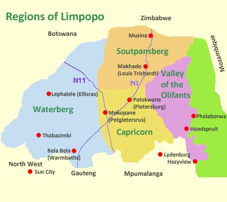
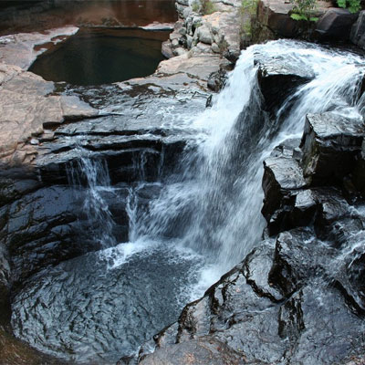
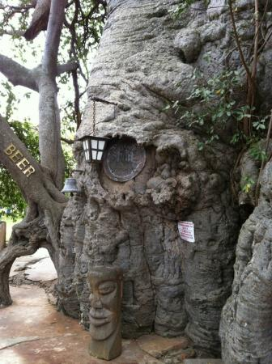
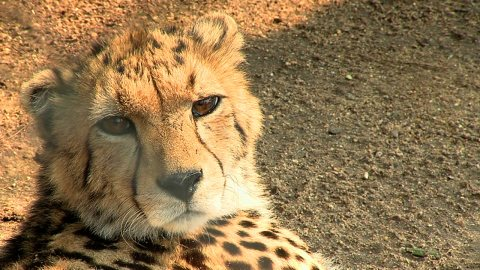
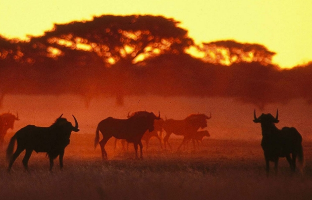
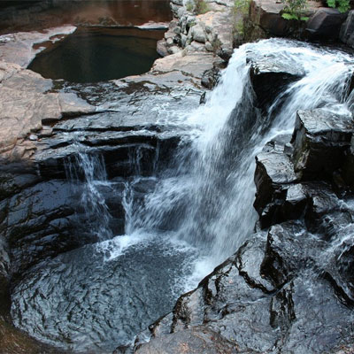
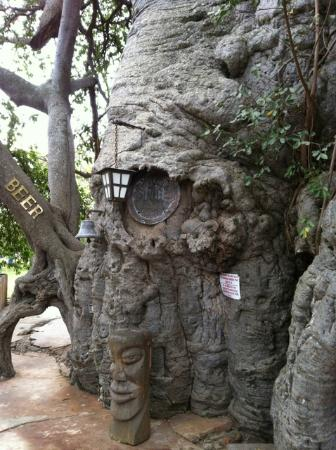
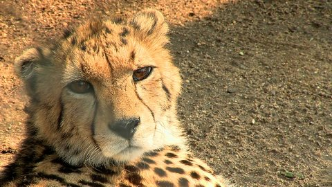
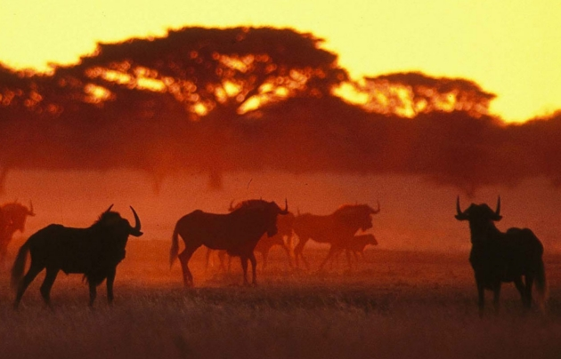

Limpopo

Limpopo is a South African province bordering Botswana, Zimbabwe and Mozambique. It's known for bushveld and wildlife reserves, including part of Kruger National Park. West of the Kruger are the craggy Blouberg mountains and Makgabeng Plateau with ancient rock art. Near the provincial capital Polokwane, the Arend Dieperink Museum and fossil-rich caves of Makapansgat explore history dating back to early hominids.
West of Polokwane, Vaalwater town offers craft shops and outdoor activities amid the rocky mountains and bushman paintings of the Waterberg Biosphere. South lie Nylsvley Nature Reserve's bird-filled wetlands and Bela-Bela's hot springs. By the Limpopo and Shashe rivers, Mapungubwe National Park is characterised by glowing sandstone hills, big game and a lost African kingdom. Limpopo's highest peak, Iron Crown, towers over the misty Magoebaskloof mountains. Just east, in the lush surroundings of Tzaneen town, stands the massive Sunland Baobab tree with a pub in its hollow trunk.
 







Click here for more info on the Limpopo Province